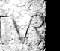

| civitas |
capitale d'une région
dont les indigènes n'étaient pas citoyens romains (Historique
d'Avenches et exemple).
Ce n'est que sous le règne de l'empereur Vespasien qu'Avenches
devient une colonie, probablement de droit latin (lien: intro. Historique
d'Avenches), la Colonia Pia Flavia Constans Emerita Helvetiorum Foederata
(= Colonie Pieuse, Flavienne, Constante, Emérite, des Helvètes,
Fédérée). |
| cursus
honorum |
expression qui désigne
la carrière politique d'un personnage. On distingue les cursus
sénatoriaux, les cursus équestres et les cursus inférieurs.
L'ordre de succession des charges est en principe fixe. Le cursus sénatorial
voit ainsi se succéder les charges annuelles suivantes: service
militaire, questure, édilité ou tribunat de la plèbe,
préture et consulat. |
| duumviri |
deux magistrats, élus
annuellement, présidaient le collège des décurions
(ordo decurionum), sorte de conseil municipal, copie réduite
du sénat de Rome (exemple). |
| évergétisme |
libéralités
d'un individu fortuné pour la communauté. C'est une des
caractéristiques de la société romaine d'obliger
moralement la classe dirigeante locale d'oeuvrer pour sa cité qui
l'honore en retour par une inscription (exemple). |
| incolae |
les incolae sont
des personnes habitant sur le territoire de la colonie mais qui ne possèdent
pas les pleins droits politiques, soit parce qu'ils sont étrangers,
soit parce qu'ils ne sont pas de naissance libre. |
| insula |
|
| lapicide |
graveur. |
| ligature |
| deux lettres
liées l'une à l'autre par le graveur. Par exemple
sur cette stèle |

|
(tiré
de l'exercice
29) |
|
| onomastique |
étude
des noms propres. |
| ordo
decurionum |
le conseil des décurions
était chargé de l'administration locale; sa souveraineté
en certaines matières s'étendait à l'ensemble du
territoire helvète. |
| pagus |
ce terme désigne les
différentes circonscriptions du territoire helvète. D'après
César, il y avait quatre pagi en Helvétie. |
| pérégrin |
habitant libre, mais non
citoyen romain, d'une province romaine. Il ne porte d'ordinaire qu'un
nom, parfois latinisé, suivi de son patronyme au génitif.
Selon le droit romain en vigueur durant les deux premiers siècles
de l'Empire, tout pérégrin pouvait acquérir la citoyenneté
romaine s'il avait exercé une magistrature dans sa cité
(dotée du droit latin). L'armée représentait une
autre option permettant d'obtenir ce statut juridique, le soldat pérégrin
recevant la citoyenneté romaine au terme des 25 années réglementaires
de service. Il recevait alors le prénom et le nom de l'empereur
sous le règne duquel il était entré en service (exemple
: Tiberius Claudius). |
| sigles
épigraphiques |
symboles graphiques
utilisés pour transcrire une inscription (outil) |
| sphaeristerium |
endroit couvert et souvent
chauffé, destiné à une sorte de jeu de paume (sphaera
= balle, ballon), sport très apprécié dans l'Antiquité
(voir le sphaeristerium des thermes
de Stabies à Pompei). |
| tabula
ansata |
On appelle tabula ansata
un cadre rectangulaire, orné sur les petits côtés
d'une queue d'hirondelle stylisée, la “queue d'aronde”. |